The game
Tetragrade is falling-block puzzling with a roguelite meta-game wrapped around it. You are a humble farmer, chosen by Zeus to prove your worth. Every line you clear pays out in gold, and the coins tumble as real physics objects into an offering bowl beside the board.
Your first run lasts just 90 seconds. Between runs you spend your gold at the Temple of the Gods, where ten deities offer permanent blessings. Each one changes how you play rather than adding a number: Midas turns a falling piece to solid gold, Ares hurls a spear into the deepest well, Epimetheus lets you take back a mistake, and Zeus clears the bottom of the board with a single bolt of lightning.
The run itself is a climb. Your level is your altitude, and the world changes around you as you go higher, from farmland to a market town, up the mountain and finally to Olympus. Where your run ends shows how far your build has come.
A compulsive block-stacking roguelite about the pleasure of a perfect fit. Clear lines, earn gold, and spend it on the blessings of ten Greek gods as you climb from the farmland to Olympus.
Falling-block puzzling meets Balatro-style score chasing, with ten Greek gods selling you the power to break the rules.
Features
A pile of real gold
Every coin you earn is a physics object. Big clears throw a shower of rings, gold, silver and bronze into the offering bowl, and you watch the pile grow all run.
Ten gods, real choices
Ten permanent upgrades across dozens of tiers. Some are powers you trigger mid-run, others quietly reshape the odds. Most must be earned before they can be bought.
Bet on gold
Gold pieces score five times as much. Fill a whole row with solid gold for a Gold Rush and a coin bounty.
Beat the clock
Runs are timed. Survive to the buzzer and you bank your coins. Top out and the gods take them back.
The climb to Olympus
Four hand-painted regions, each with its own music, weather and ambience. Reaching Olympus is the win, and endless mode waits beyond it.
Built for the couch and the Deck
Full controller support with Xbox and PlayStation button prompts, rumble, global and friends leaderboards, and 16 achievements.
The pantheon
| God | Blessing | In the demo |
|---|---|---|
| Chronos | Lengthens every run, from 90 seconds up to four and a half minutes. | Up to 3:00 |
| Prometheus | Foresight: reveals the pieces coming next. | Tier 1 |
| Gaia | Raises the walls of the board for more room to stack. | Tier 2 |
| Plutus | Coin Magnet: every clear pays more gold. | Tier 3 |
| Midas | Touch the falling piece and turn it to solid gold. | Tier 1 |
| Tyche | Luck: gold pieces fall more often. | Full game |
| Aion | Ouroboros stones that pay back time when cleared. | Full game |
| Epimetheus | Rewind: take back your last placement. | Full game |
| Ares | Turn any falling piece into a four-long spear. | Full game |
| Zeus | Lightning that clears the bottom four rows at once. | Full game |
The climb
Farmland
Where every run begins. Pollen on the breeze.
Town
A market square, a bronze bell, a quicker tempo.
Mountain
Dust squalls off the scree and battle drums.
Olympus
Storm, fire and the gods' own music. Then endless mode.
The free demo includes five gods and runs of up to three minutes, which is enough for skilled players to reach the Mountain. Olympus is saved for the full game. Demo progress carries over when you buy.
Screenshots
Click any image to open it at full 2560 × 1440 resolution.
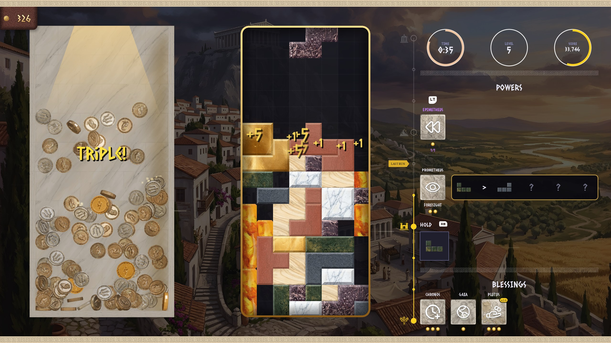
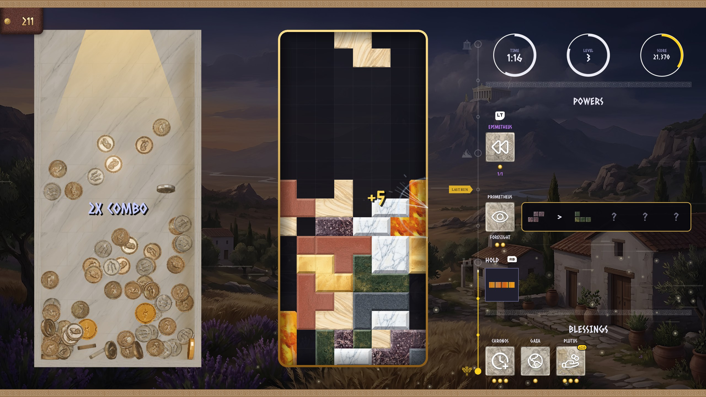
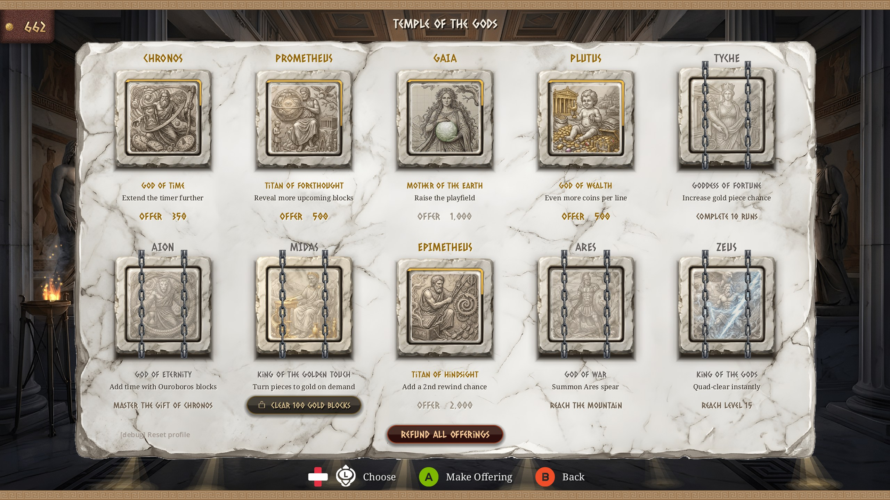
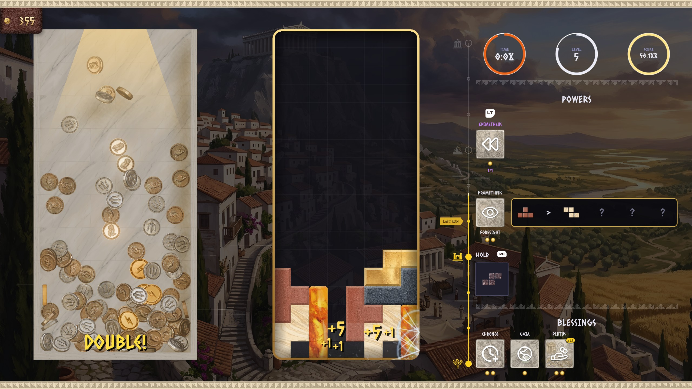
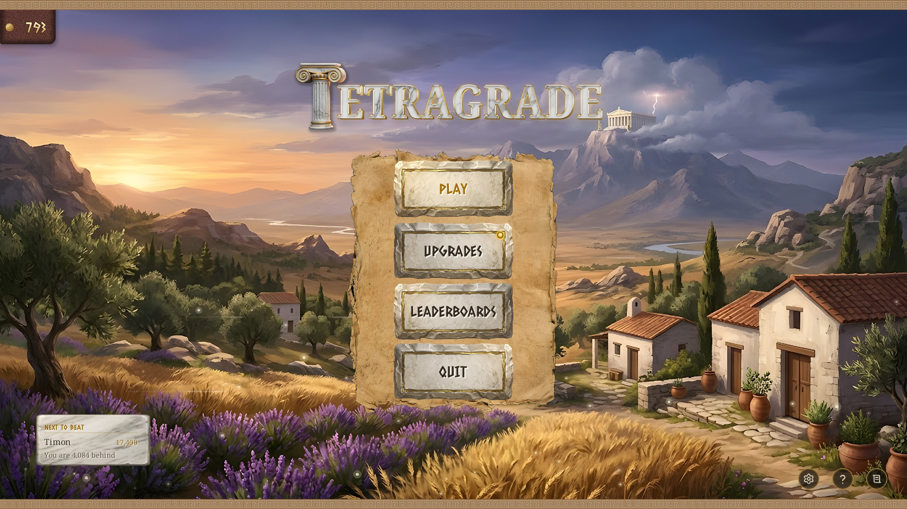
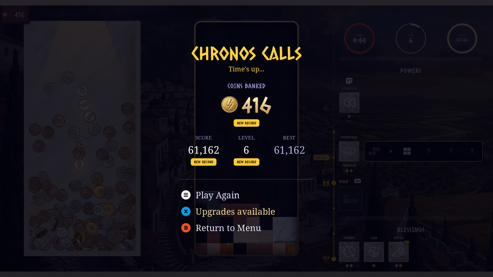
Logos & key art
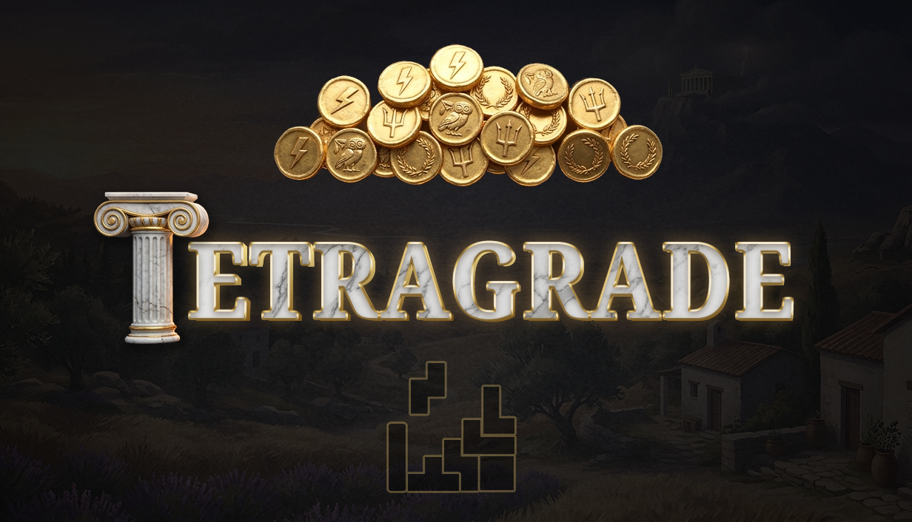
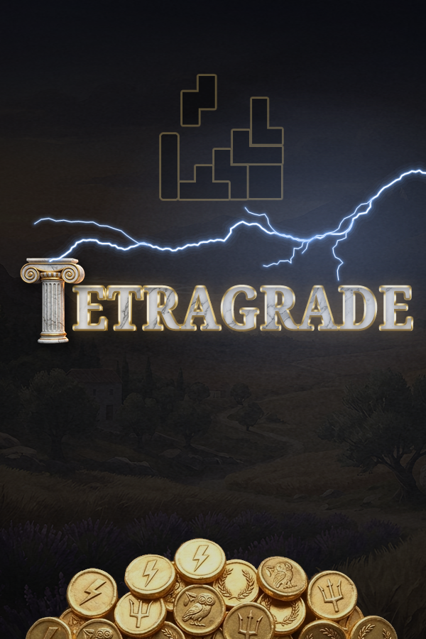
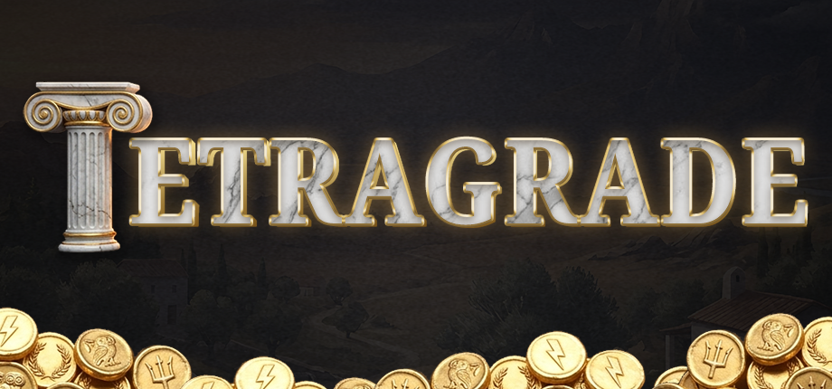
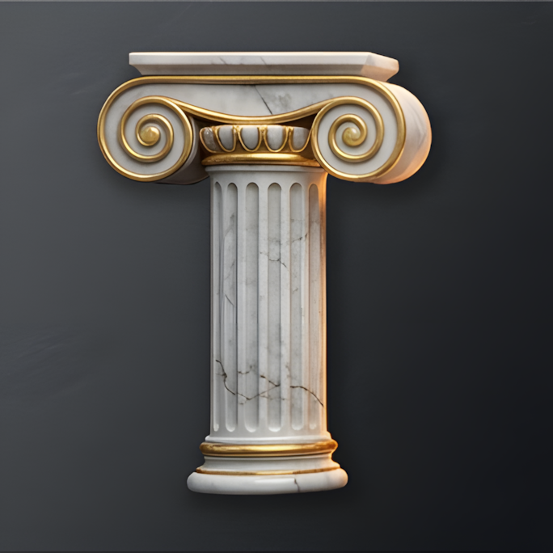
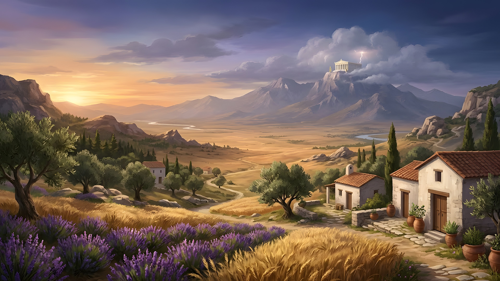
Trailer: watch it on the Steam page.
About SpunjLabs
SpunjLabs is the one-person studio of Paul Foxley, who designed, programmed and painted Tetragrade, built in the Godot engine. Tetragrade is the studio's debut on Steam.
Music by Joel R. Steudler, licensed under CC BY 4.0.
Streaming & contact
You are welcome to stream Tetragrade and monetise videos of it. No permission needed. Demo keys are not required: the demo is free to everyone on Steam.
Press & creator enquiries
Review keys for the full game will be available closer to launch.